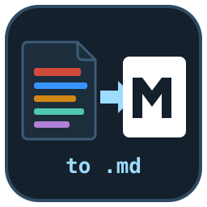
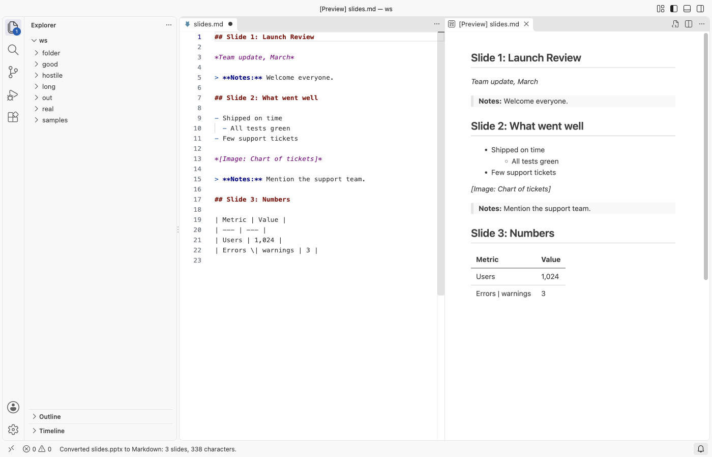

Convert to Markdown
Convert to Markdown: PDF, DOCX, a VS Code extension by Zovo
Convert PDF, Word, PowerPoint, Excel and other files to Markdown inside VS Code. Right-click a file and pick Convert to Markdown: the Markdown opens beside it.
Free, MIT license. Needs VS Code 1.90.0 or newer. Extension ID zovo.zovo-convert-to-markdown, version 0.1.1.

Free, with no limit:
- Convert to Markdown and Copy as Markdown for PDF, DOCX, PPTX, XLSX, XLS, ODS, CSV, HTML, EPUB, ODT and RTF files.
- Headings, paragraphs, lists, tables, links, code blocks, one section per slide and the speaker notes.
- Nothing to install: no Python, no server, no command-line tool. Nothing leaves your computer.
- Each file is converted in a worker thread with a memory cap and Cancel, so a damaged or huge file cannot freeze VS Code.
Zovo Pro: USD 19 once, for the Pro tools in every Zovo extension. Here it adds Convert a Folder to Markdown, Convert to Markdown with Images and LLM-ready Markdown Chunks, with 3 free tries each on your computer. Right-click a folder or file in the Explorer and pick an entry that starts with "Zovo Pro:".
Questions people ask
What is free in Convert to Markdown?
Convert to Markdown and Copy as Markdown are free with no limit for every supported format: PDF, Word (.docx, .docm, .dotx), PowerPoint (.pptx, .pptm, .ppsx, .potx), Excel and other sheets (.xlsx, .xlsm, .xlsb, .xls, .ods), CSV, TSV, HTML, EPUB, ODT, RTF and old Word .doc. You need no Python, no server and no command-line tool.
What does Zovo Pro add?
Three tools, each with 3 free tries on your computer: Convert a Folder to Markdown, Convert to Markdown with Images (pictures saved to a name_assets folder and linked) and Convert to LLM-ready Markdown Chunks (front matter, chunks and token estimates). A try counts only after the tool wrote its files. After that, Zovo Pro is USD 19 once and turns on the Pro tools in every Zovo extension. Run "Zovo Pro: Get Zovo Pro" to pay by card, with GitHub Sponsors or PayPal, or to enter a key. toMarkdown.showProTools: false hides the Pro commands.
Is there a file size limit?
Files over 200 MB are not converted (setting toMarkdown.maxFileSizeMB), and a PDF stops after 1,000 pages (setting toMarkdown.pdfMaxPages). A message tells you when either limit is reached. ZIP bombs, broken XML and deep nesting are capped or refused with a message.
Can it convert scanned PDFs?
No. A scanned PDF is pictures of pages with no text in it, and text recognition (OCR) is not included. Password-protected files and old PowerPoint 97-2003 files get a clear message instead of garbage.
Does it send my files anywhere?
No. It makes no network calls and has no telemetry. The libraries are bundled (pdf.js, mammoth, SheetJS, parse5 and fflate), and each file is converted in a separate worker thread with a 2 GB memory cap.
Formats
| File | What you get |
|---|---|
PDF (.pdf) | Headings from the font sizes, paragraphs with broken lines and hyphenated words joined, bullet and numbered lists, simple tables, two-column pages read column by column. Running headers, footers and page numbers are dropped. |
Word (.docx, .docm, .dotx) | Headings, bold, italic, strikethrough, links, nested lists, tables, block quotes, footnotes. |
PowerPoint (.pptx, .pptm, .ppsx, .potx) | ## Slide n: title for each slide, bullets with their levels, tables, pictures and the speaker notes. |
Excel and other sheets (.xlsx, .xlsm, .xlsb, .xls, .ods) | ## Sheet: name for each sheet with a pipe table; dates and numbers as the sheet shows them. |
| CSV, TSV | One pipe table. |
HTML (.html, .htm, .xhtml) | Headings, lists, tables, links, code blocks with their language. Scripts and styles are dropped. |
EPUB (.epub) | Each chapter in reading order. |
OpenDocument text (.odt), RTF, old Word (.doc) | Text, paragraphs and tables. |
Images become placeholders such as *[Image: Map of the site]*, with the alt text when the file has one.

How to use it
- Explorer: right-click a file, Convert to Markdown or Copy as Markdown. Select several files to convert them one after the other.
- Editor tab: right-click the tab of an open file.
- Command Palette: Convert to Markdown: Convert to Markdown converts the file in the active tab, or asks for one.
- The result opens as an unsaved Markdown document beside the source; Save fills in
name.mdnext to the source. Set Convert to Markdown: Output tofileto save it there at once. - Big files show progress with a Cancel button. Files over 200 MB are not converted (setting
toMarkdown.maxFileSizeMB), and a PDF stops after 1,000 pages (settingtoMarkdown.pdfMaxPages); a message says so.
Free and Pro
Free, with no limit: Convert to Markdown and Copy as Markdown for every format above.
Zovo Pro adds three tools. Each has 3 free tries on your computer; a try counts only after the tool wrote its files, and Escape or Cancel never uses one.
| Pro tool | What it does |
|---|---|
| Convert a whole folder | Every supported file in a folder and its subfolders becomes a .md file in a mirrored folder (or next to each file), with progress, Cancel, a skip-or-overwrite choice for existing files and a _conversion-report.md summary. Files that share a name keep their type in the .md name (report.pdf.md, report.docx.md), so none is lost. |
| Extract images | Saves the pictures of a Word, PowerPoint, PDF, ODT or EPUB file to a name_assets folder next to the .md and links them with relative paths, so the Markdown shows them. |
| LLM-ready output | YAML front matter (title, source file, pages or slides, date), the text split into chunks at headings with a token estimate for each (characters / 4), saved as one Markdown file per chunk or as one JSONL file. |
Zovo Pro is USD 19 once and turns on the Pro tools in every Zovo extension. To hide the three Pro commands, set toMarkdown.showProTools to false.

Safe with any file
- Every converter runs in a separate worker thread with a 2 GB memory cap and a watchdog, so a damaged, huge or hostile file cannot freeze VS Code.
- ZIP bombs, PDFs with thousands of pages, broken XML and deep nesting are capped or refused with a message.
- Text that looks like HTML or script stays text in the Markdown.
- Password-protected files and old PowerPoint 97-2003 files get a clear message instead of garbage.
- No network calls and no telemetry. The libraries are bundled: pdf.js, mammoth, SheetJS, parse5 and fflate (see THIRD-PARTY-NOTICES.txt).
Commands
| Command | |
|---|---|
| Convert to Markdown | Converts the file and opens the Markdown beside it |
| Copy as Markdown | Converts the file and copies the Markdown |
| Convert a Folder to Markdown (Pro) | All supported files in a folder |
| Convert to Markdown with Images (Pro) | Markdown plus an assets folder |
| Convert to LLM-ready Markdown Chunks (Pro) | Front matter, chunks and token estimates |
| Convert a sample file | Converts a bundled sample (Word, PDF or PowerPoint) |
Settings
| Setting | Default | |
|---|---|---|
toMarkdown.output | untitled | untitled: an unsaved document beside the source. file: save name.md next to the source. |
toMarkdown.maxFileSizeMB | 200 | Larger files are not converted. |
toMarkdown.pdfMaxPages | 1000 | PDF pages converted at most. |
toMarkdown.llmChunkTokens | 800 | Largest LLM-ready chunk, in estimated tokens. |
toMarkdown.showProTools | true | Show the three Pro commands. |
toMarkdown.askForRating | true | Ask once, after a few days of use, for a rating. |
Limits
- Scanned PDFs (pictures of pages) have no text to convert; text recognition (OCR) is not included.
- PDF tables are found from the gaps between columns. Tables without clear gaps come out as paragraphs.
- Charts, SmartArt and video in slides are named (
*[Chart]*), not converted. - Old Word 97-2003 files and RTF give text and tables without formatting.
Guides
- Convert a PDF, Word, PowerPoint or Excel file to Markdown in VS Code
- Convert a PDF or Word file to Markdown and keep the images
- Export the speaker notes of a PowerPoint deck as text
- Convert a whole folder of PDF and Word files to Markdown
- Split a PDF, Word file or deck into Markdown chunks for RAG
- PDF to Markdown Converter Online, free in your browser with no upload
Install Convert to Markdown
Click the button to open VS Code and install it, or press Ctrl+P (Cmd+P on macOS) in VS Code and run ext install zovo.zovo-convert-to-markdown.
Free, MIT license. Needs VS Code 1.90.0 or newer. Extension ID zovo.zovo-convert-to-markdown, version 0.1.1.
Source code and issues are on GitHub.
Zovo Pro and support
Zovo Pro: USD 19 once, every Zovo viewer. It turns on the Pro tools in this extension and in the other Zovo extensions you use. The free features stay free.
After a card payment your license key shows on the next page. Paste it with the command "Zovo Pro: Enter a key".
You can also support the work with no Pro:
Need your format supported?
Open a format request with a sample file, and I reply there whether it can be done. For USD 299 once, through this GitHub Sponsors tier, I add your file format or a missing feature to this extension, with tests, within 7 days.